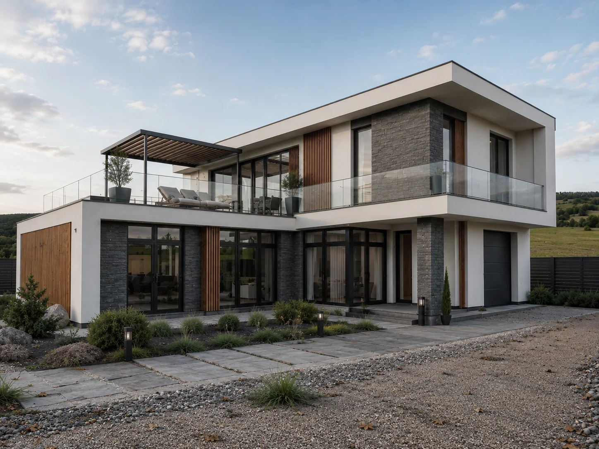
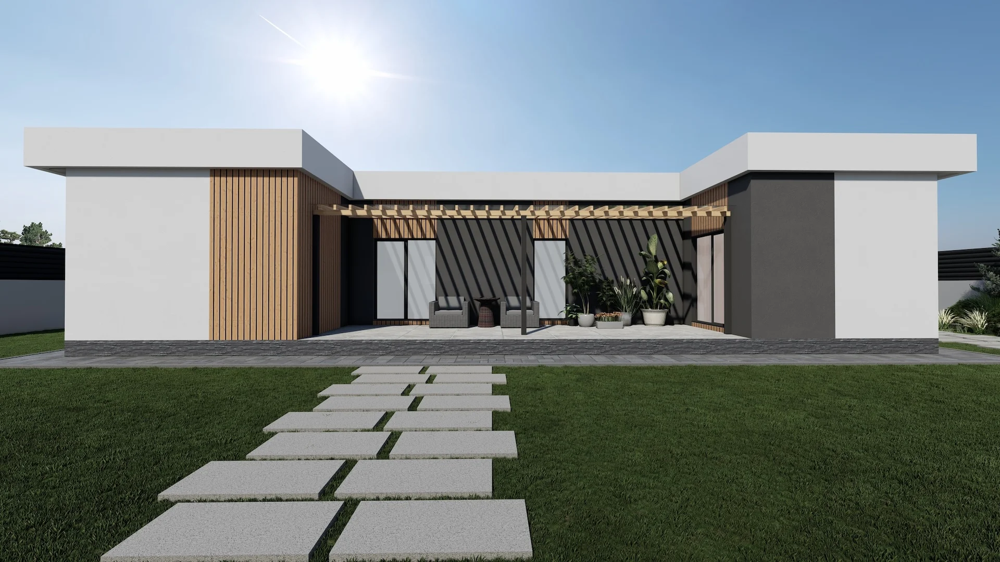

СТРОИТЕЛЬСТВО ДОМОВ ПОД КЛЮЧ
Ваш дом.
От проекта до ключей.
Проектирование и строительство домов под ключ в Крыму. Поможем выбрать участок, архитектуру и состав работ под вашу задачу.
Посмотреть домаПроектирование и строительство полного циклаВАРИАНТЫ И КОМПЛЕКТАЦИИПодберём под ваш участокПосмотреть варианты
АРХИТЕКТУРА И ДЕТАЛИ
Дом начинается
с вашего выбора.
Сравните архитектуру и количество этажей. Планировку и комплектацию обсудим по выбранному направлению.

Одноэтажный проект
ЮЖНЫЕ ЗЕМЛИ · Крым
Ближе к участку.
Больше общего пространства.
Обсудим расположение дома, террасы и жилых комнат. Подберём проект с учётом участка и пожеланий вашей семьи.
Обсудить мой проект